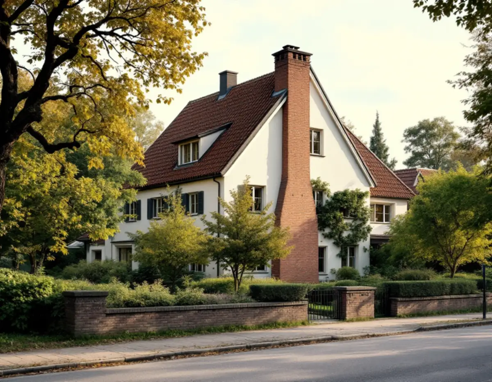
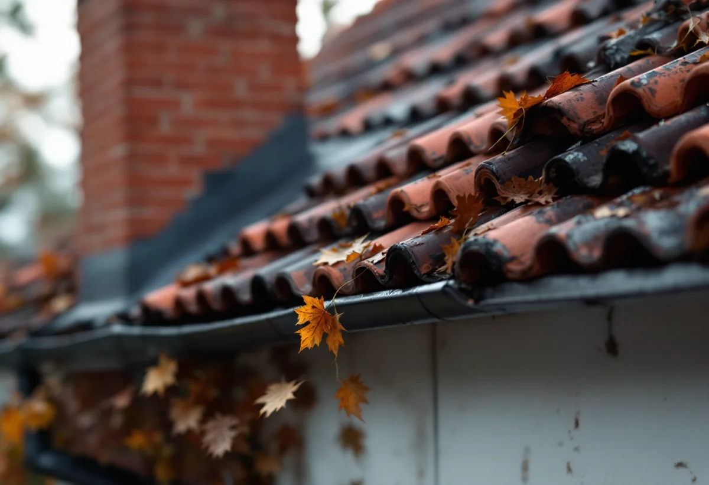

Taket, vinden och kartan
Vi går upp på taket och in på vinden, och kollar samtidigt om fastigheten ligger i ett riksintresse eller är klassad av Stadsmuseet.
En takrenovering i Bromma betyder oftast att ett brant tegeltak från 1910–30-talet läggs om på ny läkt och ny underlagspapp, eller att ett flackt plåttak från funkistiden får nytt tätskikt och nya skarvar. Ligger huset i Norra eller Södra Ängby, Olovslund eller vid Ålstensgatan krävs dessutom bygglov för att byta takmaterial.

Taket på en villa i Bromma säger mycket om när huset kom till. Stockholms stad köpte Äppelviken och Alviks säteri 1908, och på 1910-talet började stora villor för köpstarka familjer byggas där, flera av dem ritade av Edvin Engström.
På 1920-talet följde trädgårdsstäderna Ålsten, Smedslätten, Nockeby, Höglandet och Ulvsunda. Stadens egen vägledning beskriver husen som enkla volymer i ett och ett halvt plan, med branta sadeltak i rött tegel och små takkupor mitt på långsidan.
Sedan kom småstugorna. I Olovslund uppfördes de flesta självbyggda husen 1927–28, och i Norra Ängby byggdes 1 200 småstugor 1931–38 av fabrikstillverkade element under stadens ledning. Parallellt växte Södra Ängby fram 1934–39 som en funktionalistisk villastad med drygt 500 villor, och 1932–33 restes de 94 funkisradhusen längs Ålstensgatan.

På trädgårdsstädernas sadeltak och på småstugornas mansardtak är rött lertegel, enkupigt eller tvåkupigt, det ursprungliga materialet. Lertegel har lång livslängd, så det är sällan pannorna som är problemet. Det som har gjort sitt efter så många decennier är läkten, underlagspappen och plåten kring skorsten och kupor.
I Södra Ängby ser det helt annorlunda ut. Villorna fick svagt lutande eller nästan platta tak klädda med plåt, och redan de första ägarna fick erfara att sådana tak kan läcka. Där handlar en renovering om falsar, skarvar, tätskikt och hur vattnet leds bort – inte om pannor.
Trädgårdsstäderna i Bromma planterades med tall och ädellövträd, kompletterat med fruktträd och bärbuskar. Södra Ängby byggdes på en skogbevuxen höjd nära Mälaren, där en stor del av tallskogen fick stå kvar. Resultatet är skuggiga takfall och mycket barr i rännor och ränndalar.
På ett tegeltak i skugga får mossan fäste och håller kvar fukten mot pannorna. På ett flackt plåttak blir barr och löv liggande och dämmer upp vatten vid skarvarna. Därför rensar vi rännor och ränndalar som en del av jobbet och föreslår behandling mot mossa eller större hängrännor där träden står nära huset.
Sedan 1 december 2025 krävs i regel inget bygglov för att byta taktäckningsmaterial eller kulör på ett en- eller tvåbostadshus, enligt Boverket. Lov kan ändå krävas om huset eller området har skyddsbestämmelser i detaljplan eller områdesbestämmelser, om byggnaden är särskilt värdefull enligt PBL 8 kap. 13 § eller om planen har utökad lovplikt. Höjs taket kan det räknas som tillbyggnad, så stäm av med kommunen innan takets form eller höjd ändras.
Stockholms stad skriver att du behöver söka bygglov även för annars lovfria åtgärder om fastigheten ligger inom ett riksintresse för kulturmiljövården. I Bromma gäller det Norra och Södra Ängby, Ålstensgatan och Olovslund. För Södra Ängby finns dessutom en detaljplan från 1995 med rivningsförbud och skyddsbestämmelser för husens utformning.
Utanför riksintressena ger Stadsmuseets klassificeringskarta en första fingervisning. Hus som är markerade med gult eller grått och inte ligger i något utpekat område behöver normalt inget lov. Vi kontrollerar kartan och detaljplanen innan materialet bestäms – mer om det på bygglov vid takbyte.
På ett tegeltak från 1920-talet lyfter vi ner pannorna, sorterar bort de spruckna och lägger ny underlagspapp, ströläkt och bärläkt. Råsponten ses över och byts där den är mjuk eller har fuktfläckar. Hela pannor läggs tillbaka, och de som saknas ersätts med likvärdigt rött lertegel så att taket behåller färg och profil.
Runt skorstenar, kupor och i ränndalar byts beslagen, eftersom det är där läckorna brukar börja. Fotplåt och vindskivor görs om samtidigt. Vi kontrollerar också att luften kan röra sig från takfoten upp mot nocken, vilket är extra viktigt i småstugor där vinden har inretts i efterhand.
På en funkisvilla i Södra Ängby blir arbetet ett annat: plåt eller tätskikt på låg lutning, nya genomföringar och genomtänkt avvattning. Läs mer om låglutande tak och om hur en takrenovering går till i stort. Söker du oss som lokal firma finns mer på takläggare i Bromma.
Vi går upp på taket och in på vinden, och kollar samtidigt om fastigheten ligger i ett riksintresse eller är klassad av Stadsmuseet.
Vi bedömer om teglet kan återanvändas eller om ett flackt plåttak behöver nytt tätskikt, och föreslår det taket faktiskt behöver.
Inom Ängby, Olovslund och Ålstensgatan tar vi fram materialbeskrivning och bilder till ansökan innan något beställs.
Pannorna lyfts ner och staplas på tomten. Vi räknar hur många likvärdiga pannor som behöver köpas in.
Läkt, underlagspapp och vid behov råspont byts, och beslagen vid skorsten, kupor och ränndalar görs om.
Teglet läggs på igen, rännorna rensas från barr och vi går igenom resultatet med dig innan ställningen tas ner.
Rotavdraget är 30 procent av arbetskostnaden, högst 50 000 kronor per person och år, och tillsammans med rutavdrag får det bli högst 75 000 kronor. Material och resor ger inget avdrag. Vi drar av beloppet direkt på fakturan, så du betalar resterande arbetskostnad och materialet.
Äger ni villan tillsammans kan var och en använda sitt eget utrymme, vilket gör skillnad vid en större omläggning. Samma regler gäller för en småstuga eller ett radhus, så länge du äger och använder bostaden. Mer finns på rotavdrag för takarbete.
I Bromma styrs kostnaden framför allt av hur stor del av teglet som går att lägga tillbaka, hur många kupor, skorstenar och ränndalar taket har och om huset ligger där materialvalet kräver lov och underlag. Ett flackt plåttak i Södra Ängby räknas på ett helt annat sätt än ett brant tegeltak i Smedslätten. Se vad en takrenovering kostar eller gör en första uppskattning i kalkylatorn för takbyte.
Takbyte, besiktning och plåtarbeten.
Takläggare i Bromma →Så fungerar en omläggning.
Takrenovering och takomläggning →Det här styr priset.
Vad kostar en takrenovering? →Räkna på takytan och ROT.
Takbyte-kalkylator →Råsunda, Stocksundstorp och Råsta.
Takrenovering i Solna →Långbro, Herrängen och Långsjö.
Takrenovering i Älvsjö →Jakobsberg, Viksjö och Kallhäll.
Takrenovering i Järfälla →